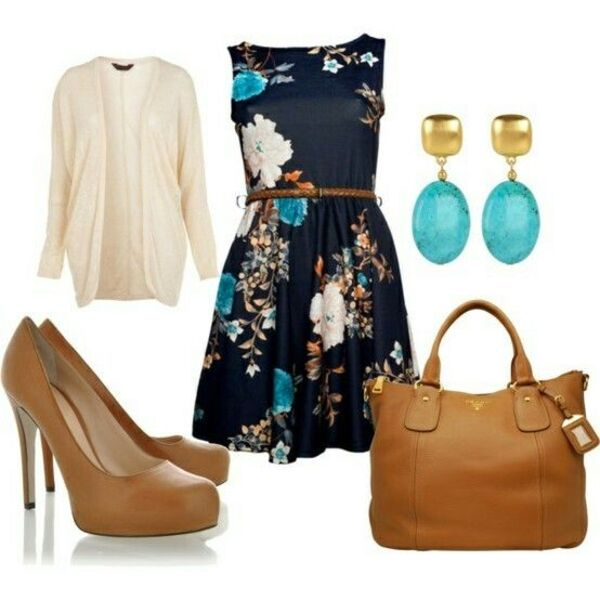
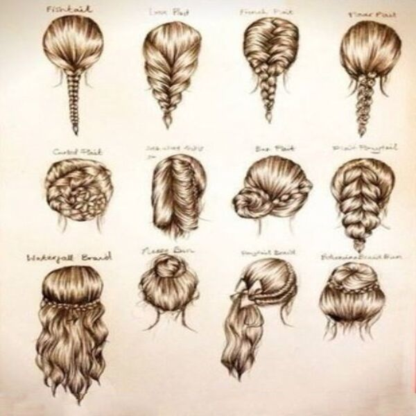
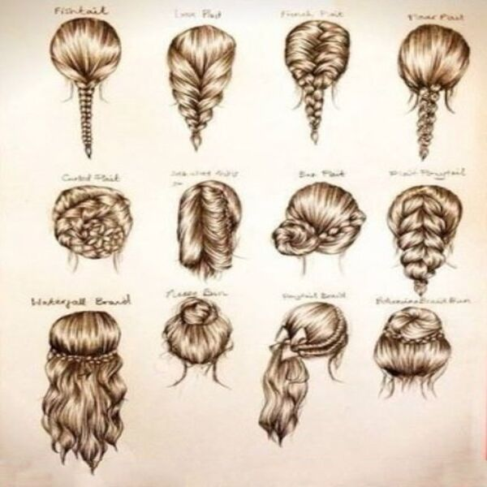
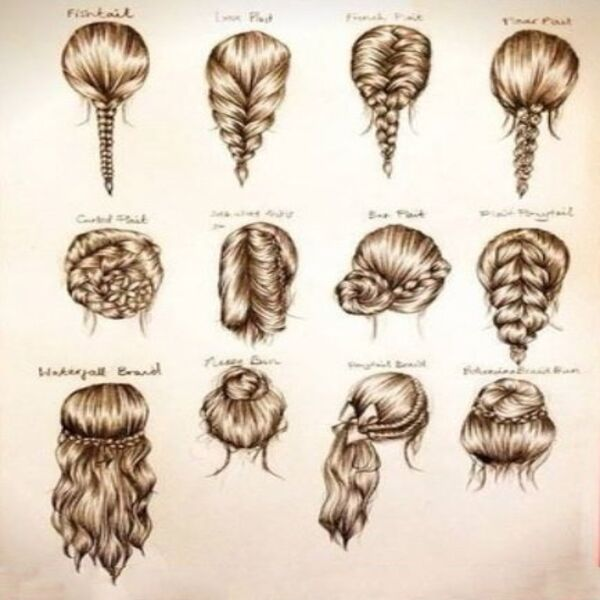

- Antes que nada, hay que recordar que el estilo no es algo mecánico, ni que se puede aplicar a cierto tipo de personas y a otras no. Más bien, el estilo se usa para expresar los sentimientos y emociones, gritarle al mundo qué clase de persona eres. Es sentirte segura con lo que llevas puesto, pero sobre todo, se trata de ser tú mismo.
- Zarcillos: Si llevas puesto zarcillos extravagantes o muy llamativos, entonces es recomendable usar un collar sutil, o simplemente ninguno. Recuerda que hay que encontrar el balance perfecto entre todo.
- Gamas de colores: No tienen que ser exactamente del mismo color, pero si deben crear una armonía entre ellos y con el resto de tu look.
- Experimenta: No te encasilles con un solo tipo de accesorios, prueba distintos colores, materiales, texturas, y juega con ellos para crear tu único look.
- Estampados: Cuando usas ropa con estampados, con lentejuelas o volados, los accesorios simples son la mejor opción. Si usas joyas demasiado llamativas, harán que el estampado se vea recargado y vulgar.
- Simplicidad: En la actualidad, las tendencias suelen mezclar todo, pero también debes tener en cuenta que hay veces en que la simplicidad es la clave de la verdadera elegancia.
- Accesorio natural: Las personas cuentan con un accesorio natural, y muchas veces no lo aprovechan, estamos hablando del cabello. El cabello es el accesorio principal y natural de las mujeres. Por eso debes usarlo de distintas maneras, ya sea recogido o suelto, corto o largo, liso u ondulado, haz que tu cabello sea el protagonista de tu look.

 

